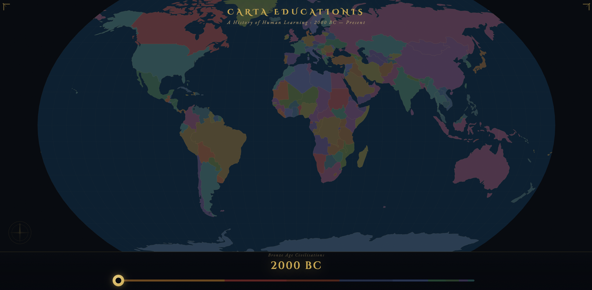
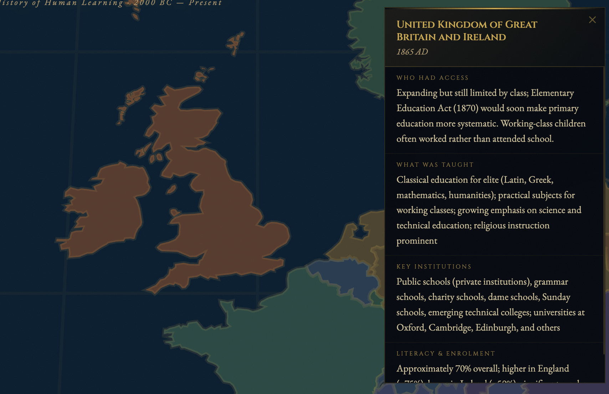
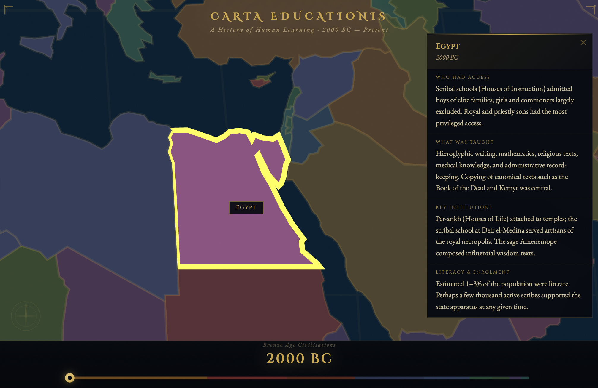

Education is not a modern invention. Across every era and every part of the world, human societies have developed ways of passing knowledge and skills from one generation to the next — through temples, oral traditions, madrasas, guilds, village schools, and imperial academies. The forms it has taken are remarkably varied.
Carta Educationis is an interactive map of education through history. Choose a period using the dial, hover over a region, and explore what learning looked like there and then — who it was for, how it was organised, and what it valued.



The history of education is a history of human ingenuity. Long before formal schooling existed, communities found ways to teach what mattered to them — whether that was agriculture, philosophy, scripture, craft, or statecraft. Looking at that history in full, across all its geographical variety, gives us a richer picture of what education actually is and what it can be.
For education students, Carta Educationis offers a starting point for exploring the historical context behind the ideas and systems they encounter in their studies.